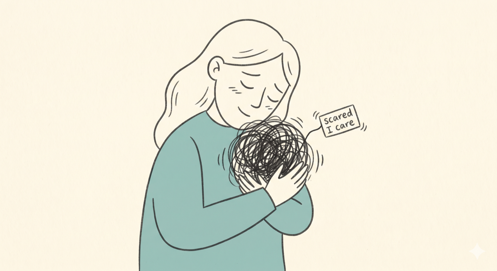
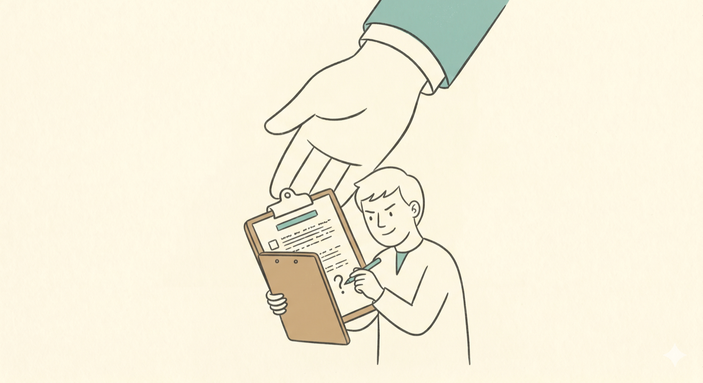
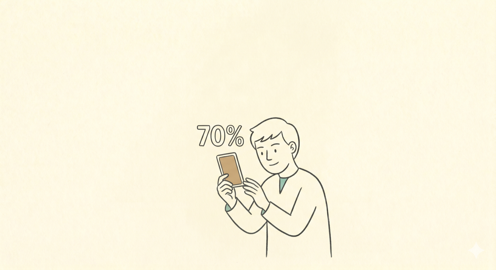
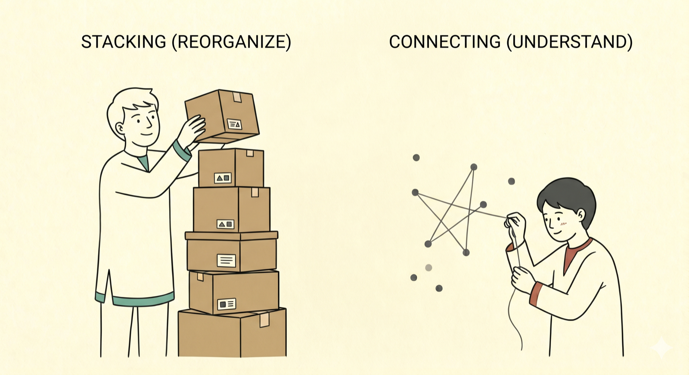

读了很多却想不深：慢系统还没被叫醒
原文小标题：（开篇，原文无小标题）
开头一句是引导语：想把这套思考习惯练进日常，可以从“五个注意力界线”开始，再用“五个问题”把输入变成能用的判断。
接着作者描述一种常见困境：时间一直在花，脑袋却一直停在很浅的地方。她引用卡尼曼（Daniel Kahneman）在《思考，快与慢》中的说法：大脑有两套系统——
- 一套快：靠直觉，自动运转。
- 一套慢：很吃力，必须刻意调用它才肯上线。
我们以为的“思考”靠的是慢系统，可它很懒，能躲就躲。所以很多时候只是快系统在反射，我们却以为自己在动脑。
问题不在你身上。那套慢系统，根本还没被叫醒。
而叫醒它是有顺序的，作者把这个顺序整理成下面六个习惯。
习惯一：给焦虑换张标签，别让它握方向盘
原文小标题：习惯一：管理焦虑，别让它牵着你走
作者引用丹·艾瑞里（Dan Ariely）的比喻：每个人身上住着两个人，一个冷静讲理，另一个在又饿又赶时冲出来、整个人是“烫”的。两人做的决定差别很大，而“烫”的那个挑的，事后看通常很糟。
她强调这与你够不够冷静无关：情绪一上来，大脑里负责慢慢想的部分会自动松开方向盘，交给负责逃命的部分，谁在那个状态下都想不清楚。
焦虑更难缠——越叫它冷静，它越往反方向冲。作者给出的出路是“换标签”：焦虑和兴奋在身体里很像，都是心跳加快、全身绷紧，差别常常只在你给它贴哪张标签。
- Leila Hormozi 的说法：把焦虑叫作“在乎的加强版”。同一个绷紧的身体，可以说“我好紧张”，也可以说“我很在乎、我在期待”。
- 一项研究：两组人上台前各说一句话，一组说“我很冷静”，一组说“我很兴奋”，说兴奋的那组表现明显更好。身体没变，变的只是解读。
作者也承认，这种话讲一次你不会信，得反复对自己讲，讲到大脑把这条新路走顺。目标不是把焦虑赶尽杀绝，而是请它离开方向盘，让慢系统有位置坐进来。
今天可以做的：下次焦虑一上来，先别急着叫自己冷静。换一句话：我不是怕，我是在乎这件事。

焦虑退到一边之后，会撞上下一个问题：脑袋里的东西太多，装不下了。
习惯二：把念头写下来，别全塞在脑子里
原文小标题：习惯二：把想法写下来，别全部塞在脑袋里
很多人以为念头放在脑子里，要用时会自己跳出来。作者直说：不会。
她引用工作记忆研究：脑袋一次大约只放得下三四件事，再多就开始互相打架。坐下来时那种“脑子塞得很满、却什么都捞不出来”的感觉，常常不是想太多，而是早已超载。慢系统本来就吃力，再让它一边扛着十件事一边思考，当然很快卡死。
所以写下来，就是先把念头倒出来、腾出位置，才有余力好好想一件事。这个习惯来自 David Allen 的《搞定》（Getting Things Done），作者一直记得其中一句：
你的大脑是用来产生想法的，不是用来存放想法的。David Allen 原句：Your mind is for having ideas, not holding them.
没做完的事全堆在脑子里，大脑就得一边记一边想，两件事同时跑当然转不动。写下来，等于把“记住”这件杂事交给纸。
今天可以做的：把在脑袋里转了一整天的那件事，用三行字写出来，先别管写得好不好。
念头摊到眼前，才能做下一件事：回头质疑它。
习惯三：质疑每个前提，尤其是聪明人给的
原文小标题：习惯三：质疑每一个假设，特别是聪明人给你的
念头摊开后，多数人会直接开始解题。作者让你先停一下，问一句：这道题本身是对的吗？我们常接过一个任务、目标或“本来就该这样”的前提就埋头去做，可那个前提往往没人认真验证过——它可能来自你信任的人、一份看起来很专业的文件，或只是因为大家都这样。
她引用马斯克（Elon Musk）的五步工作法，第一步最重要也最常被跳过：先让你的需求变得没那么蠢。每个要求都要追到一个活生生的人身上，问他为什么。
最危险的，是聪明人、资深的人给的要求。
因为他们够有分量，你根本不会想去顶。结果可能埋头几个月，把一个根本不该存在的需求做得又精致又漂亮。
为什么排在第三？因为得先把东西摊出来、看清楚，才有办法质疑。脑子一团乱时你连假设长什么样都看不见，只能照单全收；摊在纸上，才认得出哪些是别人硬塞的、哪些根本站不住。
作者自曝付过最贵的学费：花了好几个星期把一件事做得又细又满，可那件事根本不该以那种方式存在——拼劲全砸在了不该存在的东西上。
今天可以做的：挑一件你正在做、觉得“本来就该这样”的事，把前提写成一句话，用三个问题去问它：
- 这是谁说的？追到一个具体的人，而不是“公司”“团队”或“大家”。找不到人，这条前提就很可疑。
- 为什么？让那个人（或当初的你）给出理由，给不出来的就砍掉。
- 是不是因为他够聪明、够资深，我才从没想过质疑？这种最危险，分量越重的人给的要求越容易被直接收下。
问完还站得住的，才是值得花时间的问题，而这种问题你很少一开始就有答案。

习惯四：用“几成把握”想事情，别用对错
原文小标题：习惯四：用“几成把握”想事情，别用“对或错”
急着想清楚的人，常常抓到第一个冒出来的答案就停下。作者喜欢 Annie Duke 的想法：她曾是职业扑克选手，后来专门研究决策，写过《How to Decide》。打牌时永远看不到对手的牌，你不可能“知道”自己会不会赢，只能说“我大概有几成胜算”。真正会做决定的人想事情也是这样，很少用对或错，而是问“我有几成把握”。
作者列出用“几成把握”思考的三个好处：
- 不会一翻牌就收工。用对错想，一觉得自己对了就停手，还会回头护着那个答案；改成七成把握，意味着还有三成是活的，你会继续看、继续修。
- 结果差不代表当初想错。你可能做了一个七成的选择，刚好那三成发生了。Duke 把“拿结果回头评判当初决定”的误判叫作 resulting，这样想的人常被一两次坏结果吓破胆，从此不敢出手。
- 它直接给你下一步。剩下那三成就是要去补的洞；而且只认七成时，“被推翻”就成了意料中的事，你才敢在没完全确定时先动起来，不必苦等百分之百。
作者还把困惑也放进这个框架：困惑通常代表大脑正在把新东西和旧东西接起来，愿意在那个不舒服的地方多待一会儿，它才接得完。
她坦白这是自己最常逃的一关：一卡住，第一反应很少是动笔，而是去买下一门课、翻开下一本书；可以为一件还没真正开始的事准备两个多星期，每天忙得团团转。
我跟自己说我需要更多信息。讲白了，我只是不想承认：我早就该动了，只是还没想清楚而已。
今天可以做的：找一个你假装有答案的问题，改写成“我大概有几成把握，因为……”，剩下那几成就是接下来要补的地方。

习惯五：把信息重新接起来，别只是囤
原文小标题：习惯五：重组信息，别只是囤
一旦承认自己没有十成把握，真正的功课才开始：把缺的那几成一格一格补起来。作者认为，真正的思考发生在你把信息重新接起来的那一刻，光是存下来，什么都还没发生。
她引用学习科学中常被跳过的一步——“编码”。说白了，就是拿一个新概念去勾住你已经知道的事，再用自己的话讲一遍。只存进笔记软件不算，存进去的只是在积灰，被你勾起来的才真的进了脑子。这也解释了为什么整理笔记很有成就感，真正学到的却很少。
你可以把记忆想成一张网，而不是一座仓库。
一则笔记、一篇文章都不是孤岛，只是网上的一个点。你囤的是一叠排得整整齐齐的笔记，真正有用的是把它们串起来的那张网。所以笔记整理得越漂亮，有时反而越危险——那种整齐会喂给你“我学会了”的错觉，其实只是收好了而已。
作者说自己的毛病正好相反：太会往深里想、拆得很细，这块肌肉跑在最前面，把“做出来、讲出去”远远甩在后面——改了二十几个版本，却一场都还没真正办成。
今天可以做的：拿两则看起来完全无关的笔记，写一句话说明它们有什么关系。

重组完，你会以为自己懂了。但有一个测试能当场戳破这个“以为”。
习惯六：讲给外行人听
原文小标题：习惯六：把它讲给一个外行人听
测试只有一句：你能不能用一句话、不靠任何专有名词，讲到一个八岁小孩都听得懂？讲得出来的是真想通了；讲不出来、得回头翻书的，是以为自己懂、其实只是读过。
看得顺、抄得齐，会带来一种很舒服的熟悉感，而熟悉感太容易被当成“我会了”。这正是快系统最会骗人的时候：它让一切显得很顺，你就以为自己懂了。作者给出两个方向相反的方法，把这段距离逼出来：
- 费曼技巧——往深处钻，负责找洞。挑一个你以为懂的概念，假装讲给完全没背景的人听，全程不准用专有名词。讲到某处卡住、开始想翻书，那里就是破洞：你想用白话讲却过不去，只好含糊带过，或硬塞一个专有名词把缺口盖住。它不帮你背，而是照出你以为懂、其实还没接上的地方。
- 整体—局部—整体——往广处铺，负责让结构站稳。先给对方一个整体：在讲什么、为什么值得听；再钻进细节，一块一块拆开；最后退回整体，把细节接回大图。少了开头的整体，细节没地方挂；少了结尾的整体，对方手上只有一堆零件。
两个合起来：一个让你把概念钻透，一个让你把概念摆对位置。
作者的建议顺序是先用“整体—局部—整体”把脉络铺好，再用费曼技巧往下钻，把还没接上的洞一个个揪出来。她说自己的写作就是被这件事逼出来的：很少先懂了才写，常常是写到一半，那些以为懂的地方一个个露馅，才被逼着真正想一遍。
今天可以做的：把今天学到的一件事，用费曼的方式讲给一个完全不懂的人听，卡住的点记下来，那就是还没真正懂的地方。
卡住时先查顺序：六个习惯是一条链
原文小标题：卡住的时候，先检查顺序
拆开看是六个技巧，连起来看是一条线：情绪稳了，慢系统才上得来；慢系统上来了，才写得下来；写下来了，才看得清这道题对不对、敢去质疑；问清楚了，才会发现自己没那么有把握，肯承认；承认了，才会回头重组；重组过了，才讲得出来。
中间哪一环断了，后面就接不上。
所以最近觉得想事情卡卡的，先别急着怪自己，回头看一眼顺序，破口常藏在那里。作者把六个习惯压缩成六道自检题，建议存起来，卡住时对一遍：
- 我是被焦虑牵着走，还是给它换了个标签？
- 我把它写出来了吗，还是只在脑袋里转？
- 我有没有质疑这道题的假设，追问它是谁出的？
- 我是真的想清楚了，还是抓了第一个答案？
- 我把它接到已经知道的东西上了吗？
- 我讲得出来给一个外行人听吗？